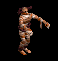
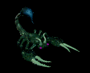
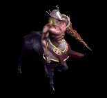
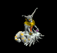
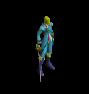
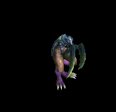
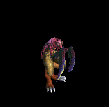
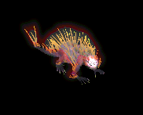
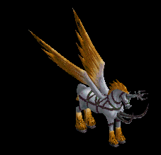
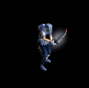

箒 をドロップするmob一覧
一覧ページへ
| 防御骸骨戦士 | アンデット | 一般2 | ||||||||
|---|---|---|---|---|---|---|---|---|---|---|
 | 片手剣(380) | 槍(250) | 弾(380) | 兜・帽子(210) | 槍投擲機(190) | 帰還(150) | クロー(380) | 箒(250) | ||
| 死の双剣士 | アンデット | セミ1 | ||||||||
 | 片手剣(390) | 槍(260) | 鍵(30) | 兜・帽子(220) | 槍投擲機(200) | 帰還(160) | クロー(390) | 箒(260) | ||
| ミイラ | アンデット | 一般2 | ||||||||
|  | 槍(380) | 杖(250) | 状態異常回復1(380) | 腰(210) | 手首(190) | 能力向上2(150) | 本(250) | 箒(380) | ||
| 包帯人間 | アンデット | 一般3 | ||||||||
 | 槍(360) | 杖(240) | 矢(360) | 腰(200) | 手首(180) | 能力向上2(140) | 本(240) | 箒(360) | 魔弾(360) | |
| エンバームド | アンデット | 一般4 | ||||||||
 | 槍(300) | 鞭(200) | 状態異常回復1(300) | 腰(170) | 手首(150) | 能力向上2(120) | 箒(300) | |||
| マミー | アンデット | セミ1 | ||||||||
 | 槍(390) | 杖(260) | 状態異常回復1(390) | 腰(220) | 手首(200) | 能力向上2(160) | 本(260) | 箒(390) | ||
| マミーキング | アンデット | ボス1 | ||||||||
 | 槍(470) | 鞭(310) | 状態異常回復1(470) | 腰(260) | 手首(240) | 能力向上2(190) | 箒(470) | |||
| 斧槍兵 | 人間 | 一般2 | ||||||||
 | 槍(380) | 両手剣(250) | 状態異常回復1(380) | 鎧(210) | 手首(190) | 十字架(120) | 鎌(250) | 箒(380) | ||
| コートナイト | 人間 | 一般3 | ||||||||
 | 槍(360) | 両手剣(240) | イベント(360) | 兜・帽子(200) | 手首(180) | 十字架(130) | 鎌(240) | 箒(360) | ||
| レッドアイ護衛兵 | 人間 | 一般4 | ||||||||
 | 槍(300) | 両手剣(200) | 鍵(20) | 鎧(170) | 手首(150) | 十字架(140) | 鎌(200) | 箒(300) | ||
| テンプラー | 人間 | セミ2 | ||||||||
 | 槍(420) | 両手剣(280) | 鍵(30) | 兜・帽子(230) | 手首(210) | 十字架(150) | 鎌(280) | 箒(420) | ||
| アベンジャー | 人間 | ボス2 | ||||||||
 | 槍(490) | 両手剣(330) | 矢(490) | 鎧(270) | 手首(250) | 十字架(160) | 鎌(330) | 箒(490) | 魔弾(490) | |
| エルフ騎士 | 人間 | セミ2 | ||||||||
 | 片手剣(420) | 槍(280) | 盾(420) | 鎧(230) | 指輪(210) | 腕刺青(150) | クロー(420) | 箒(280) | ||
| リザードマン | 悪魔 | 一般1 | ||||||||
 | 槍(410) | 両手剣(270) | イベント(410) | 鎧(230) | 槍投擲機(210) | 肩刺青(90) | 鎌(270) | 箒(410) | ||
| リザードウォリア | 悪魔 | 一般2 | ||||||||
 | 槍(380) | 両手剣(250) | イベント(380) | 鎧(210) | 槍投擲機(190) | 肩刺青(100) | 鎌(250) | 箒(380) | ||
| リザードキリング | 悪魔 | 一般3 | ||||||||
 | 槍(360) | 両手剣(240) | イベント(360) | 鎧(200) | 槍投擲機(180) | 肩刺青(110) | 鎌(240) | 箒(360) | ||
| ナーガファイター | 悪魔 | セミ1 | ||||||||
 | 槍(390) | 両手剣(260) | イベント(390) | 鎧(220) | 槍投擲機(200) | 肩刺青(120) | 鎌(260) | 箒(390) | ||
| ナーガスフィア | 悪魔 | ボス1 | ||||||||
 | 槍(470) | 両手剣(310) | イベント(470) | グローブ(260) | 槍投擲機(240) | 肩刺青(130) | 鎌(310) | 箒(470) | ||
| リザードライダー | 悪魔 | 一般2 | ||||||||
 | スリング(380) | 槍(250) | イベント(380) | 職業鎧(210) | 首(190) | 能力向上2(150) | 箒(250) | |||
| リザードチャージ | 悪魔 | 一般3 | ||||||||
 | ステッキ(360) | 槍(240) | イベント(360) | 職業鎧(200) | 首(180) | 能力向上2(140) | 箒(240) | |||
| ブレイマ | 悪魔 | セミ3 | ||||||||
 | 槍(450) | 片手剣(300) | 弾(450) | 職業鎧(250) | 爪(230) | 特殊1(180) | クロー(300) | 箒(450) | ||
| バフォメット | 悪魔 | ボス3 | ||||||||
 | 槍(510) | 鞭(340) | cP回復(510) | 足(280) | 槍投擲機(260) | 特殊1(200) | 箒(510) | |||
| ソードスパイダー | 動物 | 一般3 | ||||||||
 | 片手剣(360) | 槍(240) | 矢(360) | グローブ(200) | 首(180) | 能力向上1(140) | クロー(360) | 箒(240) | 魔弾(360) | |
| ウィーブウィドウ | 動物 | セミ1 | ||||||||
 | 片手剣(390) | 槍(260) | 矢(390) | グローブ(220) | 首(200) | 帰還(160) | クロー(390) | 箒(260) | 魔弾(390) | |
| スコーピオン | 動物 | 一般1 | ||||||||
 | 弓(410) | 槍(270) | 盾(410) | 兜・帽子(230) | イヤリング(210) | 特殊1(160) | 箒(270) | 銃(410) | ||
| ポイズンテール | 動物 | 一般2 | ||||||||
 | 弓(380) | 槍(250) | 矢(380) | 兜・帽子(210) | 手首(190) | 特殊1(150) | 箒(250) | 銃(380) | 魔弾(380) | |
| デスピンサー | 動物 | 一般3 | ||||||||
 | 弓(360) | 槍(240) | 盾(360) | 兜・帽子(200) | イヤリング(180) | 特殊1(140) | 箒(240) | 銃(360) | ||
| 食人スコーピオン | 動物 | セミ2 | ||||||||
 | 弓(420) | 槍(280) | 矢(420) | 兜・帽子(230) | イヤリング(210) | 特殊1(170) | 箒(280) | 銃(420) | 魔弾(420) | |
| スノースコルピオ | 動物 | ボス2 | ||||||||
|  | 弓(490) | 槍(330) | 盾(490) | 兜・帽子(270) | 手首(250) | 特殊1(200) | 箒(330) | 銃(490) | ||
| パン | 神獣 | 一般1 | ||||||||
 | 箒(270) | 笛(100) | 槍(270) | |||||||
| サティロス | 神獣 | 一般4 | ||||||||
 | 箒(200) | 笛(100) | 槍(200) | |||||||
| ケンタウロス | 神獣 | セミ1 | ||||||||
 | 箒(260) | 笛(100) | 槍(260) | |||||||
| ケンタウロス騎士 | 神獣 | セミ2 | ||||||||
|  | 箒(280) | 笛(100) | 槍(280) | |||||||
| ケンタウロス王 | 神獣 | ボス2 | ||||||||
 | 箒(330) | 笛(100) | 槍(330) | |||||||
| エント | 神獣 | ボス1 | ||||||||
 | 箒(310) | 杖(100) | 槍(310) | 本(470) | ||||||
| ダークファイア | 神獣 | ボス1 | ||||||||
 | 箒(100) | 水晶(310) | 槍(100) | 翼(310) | ||||||
| グリムジョーカー | 神獣 | 一般1 | ||||||||
|  | 箒(100) | 槍(100) | 鞭(270) | |||||||
| 防御骸骨戦士Ex | アンデット | 一般2 | ||||||||
| 片手剣(380) | 槍(250) | 弾(380) | 兜・帽子(210) | 槍投擲機(190) | 帰還(150) | クロー(380) | 箒(250) | ||
| 死の双剣士Ex | アンデット | セミ1 | ||||||||
| 片手剣(450) | 槍(300) | 鍵(30) | 兜・帽子(250) | 槍投擲機(230) | 帰還(180) | クロー(450) | 箒(300) | ||
| ミイラEx | アンデット | 一般2 | ||||||||
| 槍(380) | 杖(250) | 状態異常回復1(380) | 腰(210) | 手首(190) | 能力向上2(150) | 本(250) | 箒(380) | |||
| 包帯人間Ex | アンデット | 一般3 | ||||||||
| 槍(360) | 杖(240) | 矢(360) | 腰(200) | 手首(180) | 能力向上2(140) | 本(240) | 箒(360) | 魔弾(360) | |
| エンバームドEx | アンデット | 一般4 | ||||||||
| 槍(300) | 鞭(200) | 状態異常回復1(300) | 腰(170) | 手首(150) | 能力向上2(120) | 箒(300) | |||
| マミーEx | アンデット | セミ1 | ||||||||
| 槍(450) | 杖(300) | 状態異常回復1(450) | 腰(250) | 手首(230) | 能力向上2(180) | 本(300) | 箒(450) | ||
| マミーキングEx | アンデット | ボス1 | ||||||||
| 槍(1200) | 鞭(800) | 状態異常回復1(1200) | 腰(670) | 手首(600) | 能力向上2(480) | 箒(1200) | |||
| 斧槍兵Ex | 人間 | 一般2 | ||||||||
| 槍(380) | 両手剣(250) | 状態異常回復1(380) | 鎧(210) | 手首(190) | 十字架(120) | 鎌(250) | 箒(380) | ||
| コートナイトEx | 人間 | 一般3 | ||||||||
| 槍(360) | 両手剣(240) | イベント(360) | 兜・帽子(200) | 手首(180) | 十字架(130) | 鎌(240) | 箒(360) | ||
| レッドアイ護衛兵Ex | 人間 | 一般4 | ||||||||
| 槍(300) | 両手剣(200) | 鍵(30) | 鎧(170) | 手首(150) | 十字架(140) | 鎌(200) | 箒(300) | ||
| テンプラーEx | 人間 | セミ2 | ||||||||
| 槍(650) | 両手剣(430) | 鍵(50) | 兜・帽子(360) | 手首(330) | 十字架(150) | 鎌(430) | 箒(650) | ||
| アベンジャーEx | 人間 | ボス2 | ||||||||
| 槍(2000) | 両手剣(1330) | 矢(2000) | 鎧(1110) | 手首(1000) | 十字架(160) | 鎌(1330) | 箒(2000) | 魔弾(2000) | |
| エルフ騎士Ex | 人間 | セミ2 | ||||||||
| 片手剣(650) | 槍(430) | 盾(650) | 鎧(360) | 指輪(330) | 腕刺青(150) | クロー(650) | 箒(430) | ||
| リザードマンEx | 悪魔 | 一般1 | ||||||||
| 槍(410) | 両手剣(270) | イベント(410) | 鎧(230) | 槍投擲機(210) | 肩刺青(90) | 鎌(270) | 箒(410) | ||
| リザードウォリアEx | 悪魔 | 一般2 | ||||||||
| 槍(380) | 両手剣(250) | イベント(380) | 鎧(210) | 槍投擲機(190) | 肩刺青(100) | 鎌(250) | 箒(380) | ||
| キラーリザードEx | 悪魔 | 一般3 | ||||||||
| 槍(360) | 両手剣(240) | イベント(360) | 鎧(200) | 槍投擲機(180) | 肩刺青(110) | 鎌(240) | 箒(360) | ||
| ナーガファイタEx | 悪魔 | セミ1 | ||||||||
| 槍(450) | 両手剣(300) | イベント(450) | 鎧(250) | 槍投擲機(230) | 肩刺青(120) | 鎌(300) | 箒(450) | ||
| ナーガスフィアEx | 悪魔 | ボス1 | ||||||||
| 槍(1200) | 両手剣(800) | イベント(1200) | グローブ(670) | 槍投擲機(600) | 肩刺青(130) | 鎌(800) | 箒(1200) | ||
| リザードライダーEx | 悪魔 | 一般2 | ||||||||
| スリング(380) | 槍(250) | イベント(380) | 職業鎧(210) | 首(190) | 能力向上2(150) | 箒(250) | |||
| リザードチャージEx | 悪魔 | 一般3 | ||||||||
| ステッキ(360) | 槍(240) | イベント(360) | 職業鎧(200) | 首(180) | 能力向上2(140) | 箒(240) | |||
| ブレイマEx | 悪魔 | セミ3 | ||||||||
| 槍(800) | 片手剣(530) | 弾(800) | 職業鎧(440) | 爪(400) | 特殊1(320) | クロー(530) | 箒(800) | ||
| バフォメットEx | 悪魔 | ボス3 | ||||||||
| 槍(2800) | 鞭(1870) | cP回復(2800) | 足(1560) | 槍投擲機(1400) | 特殊1(1120) | 箒(2800) | |||
| ソードスパイダーEx | 動物 | 一般3 | ||||||||
| 片手剣(360) | 槍(240) | 矢(360) | グローブ(200) | 首(180) | 能力向上1(140) | クロー(360) | 箒(240) | 魔弾(360) | |
| ウィーブウィドウEx | 動物 | セミ1 | ||||||||
| 片手剣(450) | 槍(300) | 矢(450) | グローブ(250) | 首(230) | 帰還(180) | クロー(450) | 箒(300) | 魔弾(450) | |
| スコーピオンEx | 動物 | 一般1 | ||||||||
| 弓(410) | 槍(270) | 盾(410) | 兜・帽子(230) | イヤリング(210) | 特殊1(160) | 箒(270) | 銃(410) | ||
| ポイズンテールEx | 動物 | 一般2 | ||||||||
| 弓(380) | 槍(250) | 矢(380) | 兜・帽子(210) | 手首(190) | 特殊1(150) | 箒(250) | 銃(380) | 魔弾(380) | |
| デスピンサーEx | 動物 | 一般3 | ||||||||
| 弓(360) | 槍(240) | 盾(360) | 兜・帽子(200) | イヤリング(180) | 特殊1(140) | 箒(240) | 銃(360) | ||
| 食人スコーピオンEx | 動物 | セミ2 | ||||||||
| 弓(650) | 槍(430) | 矢(650) | 兜・帽子(360) | イヤリング(330) | 特殊1(260) | 箒(430) | 銃(650) | 魔弾(650) | |
| スノースコルピオEx | 動物 | ボス2 | ||||||||
| 弓(2000) | 槍(1330) | 盾(2000) | 兜・帽子(1110) | 手首(1000) | 特殊1(800) | 箒(1330) | 銃(2000) | |||
| パンEx | 神獣 | 一般1 | ||||||||
| 笛(410) | 槍(270) | 状態異常回復1(410) | 職業鎧(230) | 槍投擲機(210) | 宝石(160) | 箒(270) | |||
| サティロスEx | 神獣 | 一般4 | ||||||||
| 笛(300) | 槍(200) | 状態異常回復1(300) | 職業鎧(170) | 槍投擲機(150) | 宝石(120) | 箒(200) | |||
| ケンタウロスEx | 神獣 | セミ1 | ||||||||
| 笛(450) | 槍(300) | 状態異常回復1(450) | 職業鎧(250) | 槍投擲機(230) | 宝石(180) | 箒(300) | |||
| ケンタウロス騎士Ex | 神獣 | セミ2 | ||||||||
| 笛(650) | 槍(430) | 状態異常回復1(650) | 職業鎧(360) | 槍投擲機(330) | 宝石(260) | 箒(430) | ||||
| ダークエルフ王Ex | 神獣 | ボス2 | ||||||||
| 笛(2000) | 槍(1330) | 状態異常回復1(2000) | 職業鎧(1110) | 槍投擲機(1000) | 宝石(800) | 箒(1330) | |||
| エントEx | 神獣 | ボス1 | ||||||||
| 杖(1200) | 槍(800) | cP回復(1200) | 腰(670) | イヤリング(600) | 能力向上1(480) | 本(1200) | 箒(800) | ||
| ダークファイアEx | 神獣 | ボス1 | ||||||||
| 槍(1200) | 翼(800) | HP回復(1200) | 職業鎧(670) | 指輪(600) | 特殊1(480) | 箒(1200) | 水晶(800) | ||
| グリムジョーカーEx | 神獣 | 一般1 | ||||||||
| 槍(410) | 鞭(270) | 盾(410) | 鎧(230) | 指輪(210) | 特殊1(160) | 箒(410) | ||||
| 防御骸骨戦士Zin | アンデット | 一般2 | ||||||||
| 片手剣(1380) | 槍(920) | 弾(1380) | 兜・帽子(770) | 槍投擲機(690) | 帰還(550) | クロー(1380) | 箒(920) | ||
| 死の双剣士Zin | アンデット | セミ1 | ||||||||
| 片手剣(650) | 槍(430) | 鍵(10) | 兜・帽子(360) | 槍投擲機(330) | 帰還(260) | クロー(650) | 箒(430) | ||
| ミイラZin | アンデット | 一般2 | ||||||||
| 槍(1380) | 杖(920) | 状態異常回復1(1380) | 腰(770) | 手首(690) | 能力向上2(550) | 本(920) | 箒(1380) | |||
| 包帯人間Zin | アンデット | 一般3 | ||||||||
| 槍(1560) | 杖(1040) | 矢(1560) | 腰(870) | 手首(780) | 能力向上2(620) | 本(1040) | 箒(1560) | 魔弾(1560) | |
| エンバームドZin | アンデット | 一般4 | ||||||||
| 槍(1200) | 鞭(800) | 状態異常回復1(1200) | 腰(670) | 手首(600) | 能力向上2(480) | 箒(1200) | |||
| マミーZin | アンデット | セミ1 | ||||||||
| 槍(650) | 杖(430) | 状態異常回復1(650) | 腰(360) | 手首(330) | 能力向上2(260) | 本(430) | 箒(650) | ||
| マミーキングZin | アンデット | ボス1 | ||||||||
| 槍(1000) | 鞭(670) | 状態異常回復1(1000) | 腰(560) | 手首(500) | 能力向上2(400) | 箒(1000) | |||
| 斧槍兵Zin | 人間 | 一般2 | ||||||||
| 槍(1380) | 両手剣(920) | 状態異常回復1(1380) | 鎧(770) | 手首(690) | 十字架(120) | 鎌(920) | 箒(1380) | ||
| コートナイトZin | 人間 | 一般3 | ||||||||
| 槍(1560) | 両手剣(1040) | イベント(1560) | 兜・帽子(870) | 手首(780) | 十字架(130) | 鎌(1040) | 箒(1560) | ||
| レッドアイ護衛兵Zin | 人間 | 一般4 | ||||||||
| 槍(1200) | 両手剣(800) | 鍵(70) | 鎧(670) | 手首(600) | 十字架(140) | 鎌(800) | 箒(1200) | ||
| テンプラーZin | 人間 | セミ2 | ||||||||
| 槍(750) | 両手剣(500) | 鍵(80) | 兜・帽子(420) | 手首(380) | 十字架(150) | 鎌(500) | 箒(750) | ||
| アベンジャーZin | 人間 | ボス2 | ||||||||
| 槍(1100) | 両手剣(730) | 矢(1100) | 鎧(610) | 手首(550) | 十字架(160) | 鎌(730) | 箒(1100) | 魔弾(1100) | |
| エルフ騎士Zin | 人間 | セミ2 | ||||||||
| 片手剣(750) | 槍(500) | 盾(750) | 鎧(420) | 指輪(380) | 腕刺青(150) | クロー(750) | 箒(500) | ||
| リザードマンZin | 悪魔 | 一般1 | ||||||||
| 槍(1210) | 両手剣(810) | イベント(1210) | 鎧(670) | 槍投擲機(610) | 肩刺青(90) | 鎌(810) | 箒(1210) | ||
| リザードウォリアZin | 悪魔 | 一般2 | ||||||||
| 槍(1380) | 両手剣(920) | イベント(1380) | 鎧(770) | 槍投擲機(690) | 肩刺青(100) | 鎌(920) | 箒(1380) | ||
| リザードキリングZin | 悪魔 | 一般3 | ||||||||
| 槍(1560) | 両手剣(1040) | イベント(1560) | 鎧(870) | 槍投擲機(780) | 肩刺青(110) | 鎌(1040) | 箒(1560) | ||
| ナーガファイターZin | 悪魔 | セミ1 | ||||||||
| 槍(650) | 両手剣(430) | イベント(650) | 鎧(360) | 槍投擲機(330) | 肩刺青(120) | 鎌(430) | 箒(650) | ||
| ナーガスフィアZin | 悪魔 | ボス1 | ||||||||
| 槍(1000) | 両手剣(670) | イベント(1000) | グローブ(560) | 槍投擲機(500) | 肩刺青(130) | 鎌(670) | 箒(1000) | ||
| リザードライダーZin | 悪魔 | 一般2 | ||||||||
| スリング(1380) | 槍(920) | イベント(1380) | 職業鎧(770) | 首(690) | 能力向上2(550) | 箒(920) | |||
| リザードチャージZin | 悪魔 | 一般3 | ||||||||
| ステッキ(1560) | 槍(1040) | イベント(1560) | 職業鎧(870) | 首(780) | 能力向上2(620) | 箒(1040) | |||
| ブレイマZin | 悪魔 | セミ3 | ||||||||
| 槍(900) | 片手剣(600) | 弾(900) | 職業鎧(500) | 爪(450) | 特殊1(360) | クロー(600) | 箒(900) | ||
| バフォメットZin | 悪魔 | ボス3 | ||||||||
| 槍(1200) | 鞭(800) | cP回復(1200) | 足(670) | 槍投擲機(600) | 特殊1(480) | 箒(1200) | |||
| ソードスパイダーZin | 動物 | 一般3 | ||||||||
| 片手剣(1560) | 槍(1040) | 矢(1560) | グローブ(870) | 首(780) | 能力向上1(620) | クロー(1560) | 箒(1040) | 魔弾(1560) | |
| ウィーブウィドウZin | 動物 | セミ1 | ||||||||
| 片手剣(650) | 槍(430) | 矢(650) | グローブ(360) | 首(330) | 帰還(260) | クロー(650) | 箒(430) | 魔弾(650) | |
| スコーピオンZin | 動物 | 一般1 | ||||||||
| 弓(1210) | 槍(810) | 盾(1210) | 兜・帽子(670) | イヤリング(610) | 特殊1(480) | 箒(810) | 銃(1210) | ||
| ポイズンテールZin | 動物 | 一般2 | ||||||||
| 弓(1380) | 槍(920) | 矢(1380) | 兜・帽子(770) | 手首(690) | 特殊1(550) | 箒(920) | 銃(1380) | 魔弾(1380) | |
| デスピンサーZin | 動物 | 一般3 | ||||||||
| 弓(1560) | 槍(1040) | 盾(1560) | 兜・帽子(870) | イヤリング(780) | 特殊1(620) | 箒(1040) | 銃(1560) | ||
| 食人スコーピオンZin | 動物 | セミ2 | ||||||||
| 弓(750) | 槍(500) | 矢(750) | 兜・帽子(420) | イヤリング(380) | 特殊1(300) | 箒(500) | 銃(750) | 魔弾(750) | |
| スノースコルピオZin | 動物 | ボス2 | ||||||||
| 弓(1100) | 槍(730) | 盾(1100) | 兜・帽子(610) | 手首(550) | 特殊1(440) | 箒(730) | 銃(1100) | |||
| パンZin | 神獣 | 一般1 | ||||||||
| 笛(1210) | 槍(810) | 状態異常回復1(1210) | 職業鎧(670) | 槍投擲機(610) | 宝石(480) | 箒(810) | |||
| サティロスZin | 神獣 | 一般4 | ||||||||
| 笛(1200) | 槍(800) | 状態異常回復1(1200) | 職業鎧(670) | 槍投擲機(600) | 宝石(480) | 箒(800) | |||
| ケンタウロスZin | 神獣 | セミ1 | ||||||||
| 笛(650) | 槍(430) | 状態異常回復1(650) | 職業鎧(360) | 槍投擲機(330) | 宝石(260) | 箒(430) | |||
| ケンタウロス騎士Zin | 神獣 | セミ2 | ||||||||
| 笛(750) | 槍(500) | 状態異常回復1(750) | 職業鎧(420) | 槍投擲機(380) | 宝石(300) | 箒(500) | ||||
| ケンタウロス王Zin | 神獣 | ボス2 | ||||||||
| 笛(1100) | 槍(730) | 状態異常回復1(1100) | 職業鎧(610) | 槍投擲機(550) | 宝石(440) | 箒(730) | |||
| エントZin | 神獣 | ボス1 | ||||||||
| 杖(1000) | 槍(670) | cP回復(1000) | 腰(560) | イヤリング(500) | 能力向上1(400) | 本(1000) | 箒(670) | ||
| ダークファイアZin | 神獣 | ボス1 | ||||||||
| 槍(1000) | 翼(670) | HP回復(1000) | 職業鎧(560) | 指輪(500) | 特殊1(400) | 箒(1000) | 水晶(670) | ||
| グリムジョーカーZin | 神獣 | 一般1 | ||||||||
| 槍(1210) | 鞭(810) | 盾(1210) | 鎧(670) | 指輪(610) | 特殊1(480) | 箒(1210) | ||||
 | 弓(1560) | 片手剣(1040) | 矢(1560) | グローブ(900) | 手首(780) | 腕刺青(170) | クロー(1040) | 銃(1560) | 魔弾(1560) | |
| ハイエルフ1 Zin | 人間 | セミ1 | ||||||||
 | 片手剣(90) | イヤリング(260) | 帰還(180) | 槍(140) | 槍投擲機(40) | イベント(50) | クロー(90) | 箒(140) | ||
| ハイエルフ3 Zin | 人間 | ボス1 | ||||||||
 | 片手剣(250) | イヤリング(750) | 足(500) | 槍(400) | 状態異常回復1(100) | 杖(150) | クロー(250) | 本(150) | 箒(400) | |
| ハイエルフ4 Zin | 人間 | ボス2 | ||||||||
|  | 片手剣(450) | ブローチ(1350) | cP回復(900) | 槍(720) | 肩刺青(180) | 兜・帽子(270) | クロー(450) | 箒(720) | ||
| エルフ貴族1 Zin | 人間 | セミ2 | ||||||||
 | 片手剣(140) | マント(410) | 能力向上2(280) | 槍(220) | 槍投擲機(60) | 兜・帽子(80) | クロー(140) | 箒(220) | ||
| エルフ貴族3 Zin | 人間 | ボス2 | ||||||||
 | 片手剣(450) | ブローチ(1350) | 足(900) | 槍(720) | 槍投擲機(180) | 兜・帽子(270) | クロー(450) | 箒(720) | ||
| エルフガーディア1 Zin | 人間 | セミ3 | ||||||||
 | 片手剣(180) | ブローチ(530) | 帰還(350) | 槍(280) | 状態異常回復1(70) | 兜・帽子(110) | クロー(180) | 箒(280) | ||
| エルフガーディア2 Zin | 人間 | ボス1 | ||||||||
 | 鍵(250) | イヤリング(750) | 足(500) | 槍(400) | 槍投擲機(100) | 兜・帽子(150) | 箒(400) | |||
| 逃亡魔法師Zin | 人間 | 一般3 | ||||||||
 | 宝石(70) | 鈍器(200) | 両手剣(130) | 槍(100) | ステッキ(30) | グローブ(40) | 鎌(130) | 箒(100) | ||
| 逃亡魔法師2 Zin | 人間 | セミ1 | ||||||||
 | 投擲(90) | cP回復(260) | 両手剣(180) | 槍(140) | ステッキ(40) | HP回復(50) | 鎌(180) | 箒(140) | ||
| 逃亡ハンター2 Zin | 人間 | セミ3 | ||||||||
 | 投擲(180) | 鈍器(530) | 帰還(350) | 槍(280) | ステッキ(70) | グローブ(110) | 箒(280) | |||
| 逃亡ハンター4 Zin | 人間 | ボス2 | ||||||||
 | 投擲(450) | 鈍器(1350) | 両手剣(900) | 槍(720) | ステッキ(180) | グローブ(270) | 鎌(900) | 箒(720) | ||
| 脱獄犯2 Zin | 人間 | セミ3 | ||||||||
 | 投擲(180) | 宝石(530) | 両手剣(350) | 槍(280) | 弾(70) | HP回復(110) | 鎌(350) | 箒(280) | ||
| 脱獄犯4 Zin | 人間 | ボス3 | ||||||||
 | 投擲(600) | ブローチ(1800) | 腕刺青(1200) | 槍(960) | 両手剣(240) | グローブ(360) | 鎌(240) | 箒(960) | ||
| カマキリ戦士1 Zin | 悪魔 | セミ3 | ||||||||
|  | 投擲(460) | 鈍器(560) | 十字架(230) | 槍(140) | 肩刺青(70) | 翼(40) | 箒(140) | 水晶(40) | ||
| カマキリ戦士2 Zin | 悪魔 | ボス1 | ||||||||
 | 鍵(650) | 鈍器(800) | 弾(330) | 槍(200) | 腰(100) | イベント(50) | 箒(200) | |||
| カマキリ戦士3 Zin | 悪魔 | ボス2 | ||||||||
|  | 両手剣(1170) | ブローチ(1440) | 腕刺青(590) | 槍(360) | 状態異常回復1(180) | HP回復(90) | 鎌(1170) | 箒(360) | ||
| カマキリ戦士4 Zin | 悪魔 | ボス3 | ||||||||
 | 投擲(1560) | 鈍器(1920) | cP回復(790) | 槍(480) | 腰(240) | 翼(120) | 箒(480) | 水晶(120) | ||
| ペンティライダー Zin | 悪魔 | セミ1 | ||||||||
 | 鍵(230) | 弾(280) | 腕刺青(120) | 槍(70) | 状態異常回復1(40) | 翼(20) | 箒(70) | 水晶(20) | ||
| ペンティライダー1 Zin | 悪魔 | セミ2 | ||||||||
 | 投擲(360) | 鈍器(440) | 弾(180) | 槍(110) | 腰(60) | 翼(30) | 箒(110) | 水晶(30) | ||
| ペンティライダー3 Zin | 悪魔 | ボス1 | ||||||||
 | 鍵(650) | 鈍器(800) | 帰還(330) | 槍(200) | 腰(100) | イベント(50) | 箒(200) | |||
| ペンティライダー4 Zin | 悪魔 | ボス3 | ||||||||
 | 投擲(1560) | 鈍器(1920) | 弾(790) | 槍(480) | 両手剣(240) | 翼(120) | 鎌(240) | 箒(480) | 水晶(120) | |
| バッタ悪魔1 Zin | 悪魔 | セミ1 | ||||||||
 | 能力向上2(230) | cP回復(280) | 弾(120) | 槍(70) | 状態異常回復1(40) | 翼(20) | 箒(70) | 水晶(20) | ||
| バッタ悪魔2 Zin | 悪魔 | セミ3 | ||||||||
 | 投擲(460) | 鈍器(560) | 腕刺青(230) | 槍(140) | 腰(70) | 職業鎧(40) | 箒(140) | |||
| バッタ悪魔4 Zin | 悪魔 | ボス2 | ||||||||
 | 投擲(1170) | 状態異常回復2(1440) | cP回復(590) | 槍(360) | 腰(180) | 翼(90) | 箒(360) | 水晶(90) | ||
| 蛙 Zin | 動物 | 一般4 | ||||||||
 | 鍵(70) | ブローチ(50) | 弾(40) | 槍(30) | 槍投擲機(20) | 杖(10) | 本(10) | 箒(30) | ||
| 蛙1 Zin | 動物 | セミ1 | ||||||||
 | 投擲(120) | 爪(90) | 足(70) | 槍(50) | 腕刺青(40) | HP回復(20) | 箒(50) | |||
| 蛙4 Zin | 動物 | ボス3 | ||||||||
 | 投擲(840) | 爪(600) | 足(480) | 槍(360) | 槍投擲機(240) | 杖(120) | 本(120) | 箒(360) | ||
| ラジエータカエル1 Zin | 動物 | セミ2 | ||||||||
 | 鍵(190) | 爪(140) | 足(110) | 槍(80) | 槍投擲機(60) | 杖(30) | 本(30) | 箒(80) | ||
| ラジエータカエル3 Zin | 動物 | ボス2 | ||||||||
 | 投擲(630) | ブローチ(450) | 足(360) | 槍(270) | 槍投擲機(180) | 杖(90) | 本(90) | 箒(270) | ||
| ラジエータカエル4 Zin | 動物 | ボス3 | ||||||||
 | 鍵(840) | 爪(600) | 帰還(480) | 槍(360) | 槍投擲機(240) | 杖(120) | 本(120) | 箒(360) | ||
| ハリネズミカエル1 Zin | 動物 | セミ2 | ||||||||
 | 鍵(190) | 爪(140) | 足(110) | 槍(80) | 槍投擲機(60) | HP回復(30) | 箒(80) | |||
| ハリネズミカエル2 Zin | 動物 | セミ3 | ||||||||
 | 投擲(250) | 爪(180) | 足(140) | 槍(110) | 肩刺青(70) | 杖(40) | 本(40) | 箒(110) | ||
| ハリネズミカエル3 Zin | 動物 | ボス2 | ||||||||
|  | 両手剣(630) | 状態異常回復2(450) | 足(360) | 槍(270) | 槍投擲機(180) | cP回復(90) | 鎌(630) | 箒(270) | ||
| ユニコーン Zin | 神獣 | 一般4 | ||||||||
 | 冠(90) | マント(130) | 牙(70) | 槍(10) | 弓(20) | 翼(50) | 箒(10) | 双剣(70) | 水晶(50) | 銃(20) |
| ユニコーン2 Zin | 神獣 | ボス1 | ||||||||
 | 能力向上2(450) | ブローチ(650) | 能力向上2(350) | 槍(50) | 弓(100) | 翼(250) | 箒(50) | 水晶(250) | 銃(100) | |
| ユニコーン3 Zin | 神獣 | ボス2 | ||||||||
 | 冠(810) | マント(1170) | 牙(630) | 槍(90) | cP回復(180) | イベント(450) | 箒(90) | 双剣(630) | ||
| ペガサス1 Zin | 神獣 | セミ1 | ||||||||
 | 杖(160) | ブローチ(230) | 牙(120) | 槍(20) | 弓(40) | 翼(90) | 本(160) | 箒(20) | 双剣(120) | 水晶(90) |
| ペガサス3 Zin | 神獣 | ボス2 | ||||||||
 | 能力向上2(810) | マント(1170) | 腕刺青(630) | 槍(90) | 肩刺青(180) | 翼(450) | 箒(90) | 水晶(450) | ||
| ペガサス4 Zin | 神獣 | ボス3 | ||||||||
 | 冠(1080) | マント(1560) | 牙(840) | 槍(120) | 弓(240) | cP回復(600) | 箒(120) | 双剣(840) | 銃(240) | |
| ブルーウイング1 Zin | 神獣 | セミ2 | ||||||||
 | 杖(250) | 状態異常回復2(360) | 牙(190) | 槍(30) | 弓(60) | 翼(140) | 本(250) | 箒(30) | 双剣(190) | 水晶(140) |
| ブルーウイング2 Zin | 神獣 | ボス1 | ||||||||
 | 冠(450) | マント(650) | 牙(350) | 槍(50) | 弓(100) | HP回復(250) | 箒(50) | 双剣(350) | 銃(100) | |
| ブルーウイング3 Zin | 神獣 | ボス2 | ||||||||
|  | 冠(810) | ブローチ(1170) | 牙(630) | 槍(90) | 弓(180) | 翼(450) | 箒(90) | 双剣(630) | 水晶(450) | 銃(180) |
| 黒い炎 | 神獣 | ボス1 | ||||||||
| 箒(100) | 水晶(310) | 槍(100) | 翼(310) | ||||||
| 黒い炎 Ex | 神獣 | ボス1 | ||||||||
| 槍(1200) | 翼(800) | HP回復(1200) | 職業鎧(670) | 指輪(600) | 特殊1(480) | 箒(1200) | 水晶(800) | ||
| 皇帝蜘蛛 | 動物 | 一般3 | ||||||||
| 片手剣(360) | 槍(240) | 矢(360) | グローブ(200) | 首(180) | 能力向上1(140) | クロー(360) | 箒(240) | 魔弾(360) | |
| 女郎蜘蛛 | 動物 | セミ1 | ||||||||
| 片手剣(390) | 槍(260) | 矢(390) | グローブ(220) | 首(200) | 帰還(160) | クロー(390) | 箒(260) | 魔弾(390) | |
| 皇帝蜘蛛 Ex | 動物 | 一般3 | ||||||||
| 片手剣(360) | 槍(240) | 矢(360) | グローブ(200) | 首(180) | 能力向上1(140) | クロー(360) | 箒(240) | 魔弾(360) | |
| 女郎蜘蛛 Ex | 動物 | セミ1 | ||||||||
| 片手剣(450) | 槍(300) | 矢(450) | グローブ(250) | 首(230) | 帰還(180) | クロー(450) | 箒(300) | 魔弾(450) | |
| スコルピオ | 動物 | 一般1 | ||||||||
| 弓(410) | 槍(270) | 盾(410) | 兜・帽子(230) | イヤリング(210) | 特殊1(160) | 箒(270) | 銃(410) | ||
| 毒サソリ | 動物 | 一般2 | ||||||||
| 弓(380) | 槍(250) | 矢(380) | 兜・帽子(210) | 手首(190) | 特殊1(150) | 箒(250) | 銃(380) | 魔弾(380) | |
| 鋏サソリ | 動物 | 一般3 | ||||||||
| 弓(360) | 槍(240) | 盾(360) | 兜・帽子(200) | イヤリング(180) | 特殊1(140) | 箒(240) | 銃(360) | ||
| スコルピオハンタ | 動物 | セミ2 | ||||||||
| 弓(420) | 槍(280) | 矢(420) | 兜・帽子(230) | イヤリング(210) | 特殊1(170) | 箒(280) | 銃(420) | 魔弾(420) | |
| スノースコルピオ | 動物 | ボス2 | ||||||||
| 弓(490) | 槍(330) | 盾(490) | 兜・帽子(270) | 手首(250) | 特殊1(200) | 箒(330) | 銃(490) | |||
| スコルピオ Ex | 動物 | 一般1 | ||||||||
| 弓(410) | 槍(270) | 盾(410) | 兜・帽子(230) | イヤリング(210) | 特殊1(160) | 箒(270) | 銃(410) | ||
| 毒サソリ Ex | 動物 | 一般2 | ||||||||
| 弓(380) | 槍(250) | 矢(380) | 兜・帽子(210) | 手首(190) | 特殊1(150) | 箒(250) | 銃(380) | 魔弾(380) | |
| 鋏サソリ Ex | 動物 | 一般3 | ||||||||
| 弓(360) | 槍(240) | 盾(360) | 兜・帽子(200) | イヤリング(180) | 特殊1(140) | 箒(240) | 銃(360) | ||
| スコルピオハンタ Ex | 動物 | セミ2 | ||||||||
| 弓(650) | 槍(430) | 矢(650) | 兜・帽子(360) | イヤリング(330) | 特殊1(260) | 箒(430) | 銃(650) | 魔弾(650) | |
| スノースコルピオ Ex | 動物 | ボス2 | ||||||||
| 弓(2000) | 槍(1330) | 盾(2000) | 兜・帽子(1110) | 手首(1000) | 特殊1(800) | 箒(1330) | 銃(2000) | |||
| デーモン将軍 | 悪魔 | セミ3 | ||||||||
| 槍(450) | 片手剣(300) | 弾(450) | 職業鎧(250) | 爪(230) | 特殊1(180) | クロー(300) | 箒(450) | ||
| バフォメット | 悪魔 | ボス3 | ||||||||
| 槍(510) | 鞭(340) | cP回復(510) | 足(280) | 槍投擲機(260) | 特殊1(200) | 箒(510) | |||
| デーモン将軍 Ex | 悪魔 | セミ3 | ||||||||
| 槍(800) | 片手剣(530) | 弾(800) | 職業鎧(440) | 爪(400) | 特殊1(320) | クロー(530) | 箒(800) | ||
| バフォメット Ex | 悪魔 | ボス3 | ||||||||
| 槍(2800) | 鞭(1870) | cP回復(2800) | 足(1560) | 槍投擲機(1400) | 特殊1(1120) | 箒(2800) | |||
| スコフィールダー Zin | 人間 | 一般4 | ||||||||
| 宝石(70) | 鈍器(200) | 両手剣(130) | 槍(100) | ステッキ(30) | グローブ(40) | 鎌(130) | 箒(100) | ||
| フロッグ Zin | 動物 | 一般4 | ||||||||
| 鍵(70) | ブローチ(50) | 弾(40) | 槍(30) | 槍投擲機(20) | 杖(10) | 本(10) | 箒(30) | ||
| ユニコーン Zin | 神獣 | 一般4 | ||||||||
| 冠(90) | マント(130) | 牙(70) | 槍(10) | 弓(20) | 翼(50) | 箒(10) | 双剣(70) | 水晶(50) | 銃(20) |
| 戦慄のサソリ Zin | 動物 | ボス2 | ||||||||
| 弓(1100) | 槍(730) | 盾(1100) | 兜・帽子(610) | 手首(550) | 特殊1(440) | 箒(730) | 銃(1100) | |||
| フロッグ Zin | 動物 | 一般4 | ||||||||
| 鍵(70) | ブローチ(50) | 弾(40) | 槍(30) | 槍投擲機(20) | 杖(10) | 本(10) | 箒(30) | ||
| ユニコーン Zin | 神獣 | 一般4 | ||||||||
| 冠(90) | マント(130) | 牙(70) | 槍(10) | 弓(20) | 翼(50) | 箒(10) | 双剣(70) | 水晶(50) | 銃(20) |
| スコフィールダー Zin | 人間 | 一般4 | ||||||||
| 宝石(70) | 鈍器(200) | 両手剣(130) | 槍(100) | ステッキ(30) | グローブ(40) | 鎌(130) | 箒(100) | ||
| デスピンサーEv | 動物 | 一般3 | ||||||||
| 弓(1560) | 槍(1040) | 盾(1560) | 兜・帽子(870) | イヤリング(780) | 特殊1(620) | 箒(1040) | 銃(1560) | ||
| リザードチャージEv | 悪魔 | 一般3 | ||||||||
| ステッキ(1560) | 槍(1040) | イベント(1560) | 職業鎧(870) | 首(780) | 能力向上2(620) | 箒(1040) | |||
| コートナイトEv | 人間 | 一般3 | ||||||||
| 槍(1560) | 両手剣(1040) | イベント(1560) | 兜・帽子(870) | 手首(780) | 十字架(130) | 鎌(1040) | 箒(1560) | ||
| ソードスパイダーEv | 動物 | 一般3 | ||||||||
| 片手剣(1560) | 槍(1040) | 矢(1560) | グローブ(870) | 首(780) | 能力向上1(620) | クロー(1560) | 箒(1040) | 魔弾(1560) | |
| 包帯人間Ev | アンデット | 一般3 | ||||||||
| 槍(1560) | 杖(1040) | 矢(1560) | 腰(870) | 手首(780) | 能力向上2(620) | 本(1040) | 箒(1560) | 魔弾(1560) | |
| リザードキリングEv | 悪魔 | 一般3 | ||||||||
| 槍(1560) | 両手剣(1040) | イベント(1560) | 鎧(870) | 槍投擲機(780) | 肩刺青(110) | 鎌(1040) | 箒(1560) | ||
| サティロスEv | 神獣 | 一般4 | ||||||||
| 笛(1200) | 槍(800) | 状態異常回復1(1200) | 職業鎧(670) | 槍投擲機(600) | 宝石(480) | 箒(800) | |||
| エンバームドEv | アンデット | 一般4 | ||||||||
| 槍(1200) | 鞭(800) | 状態異常回復1(1200) | 腰(670) | 手首(600) | 能力向上2(480) | 箒(1200) | |||
| レッドアイ護衛兵Ev | 人間 | 一般4 | ||||||||
| 槍(1200) | 両手剣(800) | 鍵(70) | 鎧(670) | 手首(600) | 十字架(140) | 鎌(800) | 箒(1200) | ||
| エルフガーディアEv | 人間 | セミ3 | ||||||||
| 片手剣(180) | ブローチ(530) | 帰還(350) | 槍(280) | 状態異常回復1(70) | 兜・帽子(110) | クロー(180) | 箒(280) | ||
| スノースコルピオEv | 動物 | ボス2 | ||||||||
| 弓(1100) | 槍(730) | 盾(1100) | 兜・帽子(610) | 手首(550) | 特殊1(440) | 箒(730) | 銃(1100) | |||
| バフォメットEv | 悪魔 | ボス3 | ||||||||
| 槍(1200) | 鞭(800) | cP回復(1200) | 足(670) | 槍投擲機(600) | 特殊1(480) | 箒(1200) | |||
| 斧槍兵Sp | 人間 | 一般4 | ||||||||
| 槍(1400) | 両手剣(900) | 状態異常回復1(1400) | 鎧(800) | 手首(700) | 十字架(100) | 鎌(900) | 箒(1400) | ||
| ラジエータカエル1 Sp | 動物 | 一般4 | ||||||||
| 鍵(200) | 爪(500) | 足(700) | 槍(1100) | 槍投擲機(600) | 杖(800) | 本(1100) | 箒(1100) | ||
| ペガサスSp | 神獣 | セミ1 | ||||||||
| 冠(1080) | マント(1500) | 牙(900) | 槍(120) | 弓(300) | cP回復(600) | 箒(120) | 双剣(900) | 銃(300) | |
| リザードマンSp | 悪魔 | 一般4 | ||||||||
| 槍(1210) | 両手剣(810) | イベント(1210) | 鎧(670) | 槍投擲機(610) | 肩刺青(90) | 鎌(810) | 箒(1210) | ||
| テンプラーSp | 人間 | 一般4 | ||||||||
| 槍(1400) | 両手剣(900) | 状態異常回復1(1400) | 鎧(800) | 手首(700) | 十字架(100) | 鎌(900) | 箒(1400) | ||
| 逃亡魔法師Sp | 人間 | 一般4 | ||||||||
|  | 宝石(1000) | 鈍器(1400) | 両手剣(800) | 槍(700) | ステッキ(600) | グローブ(400) | 鎌(1400) | 箒(700) | ||
| 逃亡ハンター Sp | 人間 | 一般4 | ||||||||
| 宝石(1000) | 鈍器(1400) | 両手剣(800) | 槍(700) | ステッキ(600) | グローブ(400) | 鎌(1400) | 箒(700) | ||
| サティロス Sp | 神獣 | 一般4 | ||||||||
| 笛(1200) | 槍(800) | 状態異常回復1(1200) | 職業鎧(670) | 槍投擲機(600) | 宝石(480) | 箒(800) | |||
| 逃亡魔法師Sp[テスト用] | 人間 | 一般4 | ||||||||
| 宝石(1000) | 鈍器(1400) | 両手剣(800) | 槍(700) | ステッキ(600) | グローブ(400) | 鎌(1400) | 箒(700) |